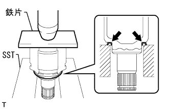
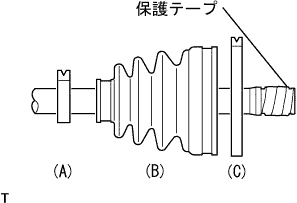
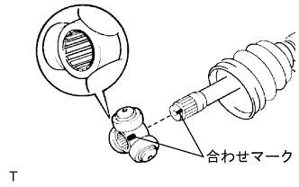
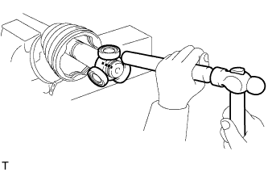
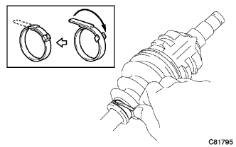
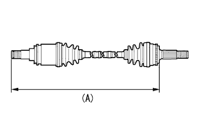

Rear Drive Shaft (4WD) Reassembly |
| 1. Rear Drive Shaft Dust Cover LH Installation |
 |
Using SST, a steel plate and a press, install a new dust cover.
| 2. Install Rear Drive Shaft Inboard Joint Snap Ring LH |
Install a new snap ring.
| 3. Rear Drive Shaft Inboard Joint Assembly LH Installation |
 |
Wrap protective tape around the splines of the outboard joint shaft assembly.
Install the following new parts to the outboard joint shaft assembly in this order.
Inboard joint boot clamp (A in illustration)
Inboard joint boot (B in illustration)
Inboard joint boot clamp No.2 (C in illustration)
Secure the drive shaft assembly in a vise between aluminum plates.
 |
Align the matchmarks and install the tripod joint to the outboard joint shaft assembly.
 |
Using a brass bar and hammer, tap in the tripod joint.
 |
Using SST, install a new shaft snap ring.
Pack grease into the inboard joint assembly.
 |
Align the matchmarks and install the inboard joint assembly to the outboard joint shaft assembly
| 4. Drive Shaft Inboard Joint Boot Installation |
Install the inboard joint boot to the grooves of the inboard joint assembly and outboard joint shaft assembly.
| 5. Rear Drive Shaft Outboard Joint Boot Clamp LH NO.2 Installation |
 |
Using needle-nose pliers, hook the projection and recess of the clamp together to secure it.
| 6. Rear Drive Shaft Inboard Joint Boot Clamp LH Installation |
 |
Using a screwdriver, install the inboard joint boot clamp to the outboard joint boot.
| 7. Rear Drive Shaft Assembly LH Inspection |
 |
Check that the joints operate smoothly with no excessive play when moved up and down, left and right, and in the axial direction.
Check that the joint boots are free of cracks, damage and grease leakage.